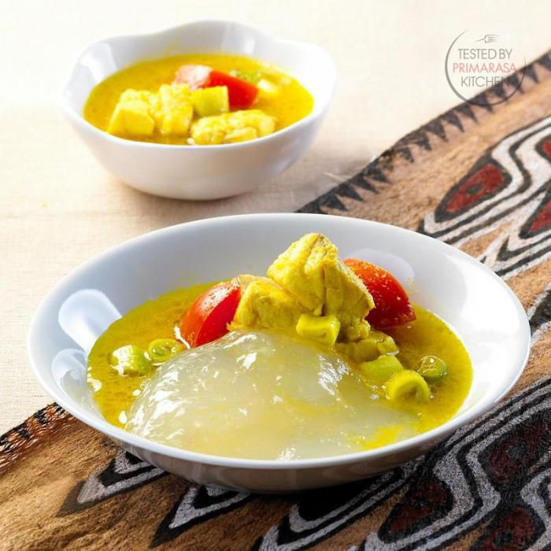

Pecel Madiun
Pecal Madiun adalah hidangan ikan khas Madiun, Jawa Timur. Ikan digoreng atau dikukus, lalu disiram sambal pecak yang pedas, asam, dan segar, biasanya terbuat dari cabai, bawang, tomat, dan jeruk limau. Rasanya segar, pedas, dan menggugah selera.
Rp.49.000
Pesan Sekarang